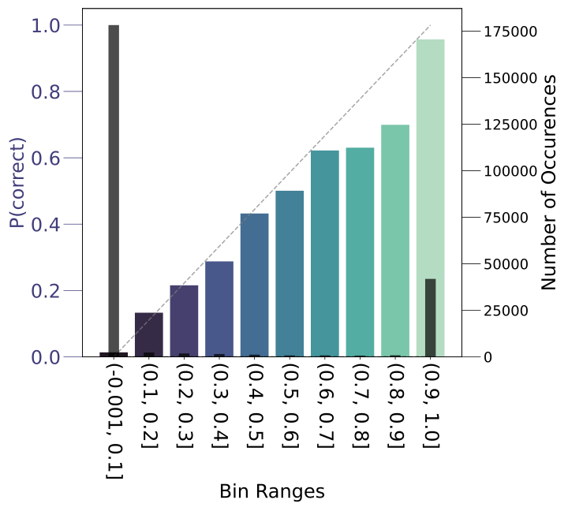
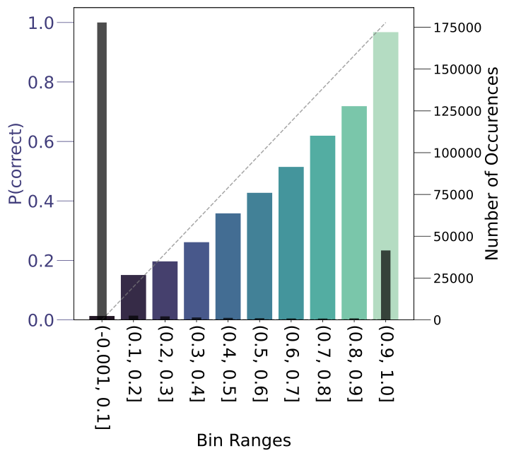
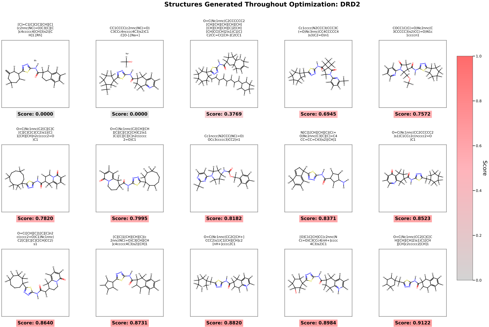

Designing a new drug is, at its core, a search problem. Out of a near-infinite space of possible molecules, researchers must find the handful that bind the right protein, are stable, non-toxic, synthesizable, and do all of these things at once. Traditional computational approaches rely on hand-crafted rules, graph-based representations, or narrow generative models that struggle to capture the full complexity of chemical space.
Large language models have transformed fields from code generation to creative writing. Could the same idea work for molecules? We set out to test this hypothesis. The results exceeded our expectations.
In our recent NeurIPS paper, we present Chemlactica and Chemma, a family of LLMs fine-tuned specifically for molecular science, together with a novel optimization algorithm that achieves state-of-the-art performance on the most widely used molecular optimization benchmarks. All models, data, and code are publicly available.
The foundation of any good language model is its training data. Previous efforts trained on SMILES strings alone (plain text representations of molecular graphs). We went further. Starting from PubChem’s full database of 110 million molecules, we computed a rich set of properties for each compound: drug-likeness (QED), synthesizability (SAS), molecular weight, polar surface area, partition coefficient, and more. We also integrated 4 billion molecular similarity pairs.
The result is a structured JSONL corpus of approximately 40 billion tokens. Each molecule is encoded with tagged properties, similar molecules, synonyms, and experimental data. Here is what a sample entry for aspirin looks like:
This tag-based design is crucial: by randomizing the order of properties and the position of the SMILES string, the model learns to both predict properties from structure and generate molecules conditioned on desired properties.
We trained three model variants through continued pretraining on our corpus:
Chemlactica-125M and Chemlactica-1.3B build on Meta’s Galactica, chosen for its existing exposure to scientific text and PubChem molecules. Chemma-2B builds on Google’s Gemma, selected for its strong general-purpose performance despite no explicit molecular training. Training was conducted on NVIDIA A100 and H100 GPUs at Yerevan State University and on Nebius.ai cloud.
After training, our models demonstrate two key capabilities. First, property prediction: given a molecule’s SMILES, the model accurately predicts its QED, SAS, molecular weight, and other properties. Second, conditional generation: given a target property value, the model generates valid molecules that satisfy it.


Training a language model that understands chemistry is valuable, but the real prize in drug discovery is optimization: finding the molecule that scores highest on some complex objective (a “black-box oracle”) with as few evaluations as possible. Lab experiments and quantum simulations are expensive; every oracle call counts.
We designed a novel population-based algorithm that unifies three ideas:
Instead of hand-coded crossover and mutation operators, we use the language model itself to generate offspring. Given a pool of high-performing molecules, we prompt the model with their SMILES strings (enclosed in [SIMILAR] tags) and ask it to generate a new, related molecule. The model has learned what “molecular similarity” means, so it produces chemically meaningful variations rather than random perturbations.
When the optimization stalls, we fine-tune the language model on the best molecules discovered so far, together with their oracle scores. This teaches the model the relationship between structure and reward, enabling increasingly targeted generation in subsequent rounds. Think of it as the model “learning on the job.”
Each generation round, prompts are constructed by sampling molecules from the pool, assigning similarity targets, and optionally including oracle score targets above the current best. This steers the model toward generating molecules that are both novel and high-scoring.
The PMO benchmark is the standard evaluation suite for molecular optimization, consisting of 23 diverse tasks with a strict budget of 10,000 oracle calls each. The metric is the area under the curve (AUC) of the top-10 average property value over the optimization trajectory.
| Method | Sum of 23 Tasks (AUC Top-10) |
|---|---|
| REINVENT | 14.196 |
| Augmented Memory | 15.002 |
| Genetic-guided GFlowNets | 16.213 |
| Chemlactica-125M (ours) | 17.170 |
| Chemlactica-1.3B (ours) | 17.284 |
| Chemma-2B (ours) | 17.534 |
Our smallest model, Chemlactica-125M, already surpasses the previous state-of-the-art by a 6% margin. Scaling up to Chemma-2B yields a total 8% improvement over Genetic-guided GFlowNets. Importantly, these gains are consistent: our models lead or match on the vast majority of individual tasks.
We went beyond synthetic benchmarks by applying our method to real drug discovery targets: DRD2, AChE, and MK2 protein kinase. Using AutoDock-GPU as the oracle, we measured how quickly each method discovers molecules with high predicted binding affinity.
Chemma-2B and Chemlactica-1.3B discover high-affinity candidates 2–4× faster than the best existing methods. The generated molecules are structurally diverse, and many possess drug-like properties (high QED, low SAS).

In a separate evaluation, we tested the ability to optimize drug-likeness (QED ≥ 0.9) of 800 lead molecules while maintaining structural similarity (≥ 0.4). Chemlactica-125M achieves a 99.0% success rate, outperforming the previous best method (RetMol, 94.5%), while doing so with 5× fewer evaluations.
Three factors drive the strength of our approach. First, the training data is richer than anything previously used. By including computed properties, similarity relationships, and experimental data alongside SMILES strings, the model develops a much deeper understanding of molecular structure–property relationships than SMILES-only models.
Second, the optimization algorithm adapts during the search. The dynamic fine-tuning mechanism lets the model learn from the specific oracle it is optimizing against, turning generic chemical knowledge into task-specific generation capability.
Third, the LLM replaces brittle heuristics with learned chemical intuition. Traditional genetic algorithms rely on hand-designed crossover and mutation operators that don’t understand chemistry. Our language model generates structurally coherent modifications because it has internalized the grammar of molecular structure from hundreds of millions of examples.
Beyond optimization, we show that our models can be efficiently fine-tuned for new property prediction tasks not seen during pretraining. With just a few hundred training examples, Chemlactica achieves competitive performance on standard benchmarks including MoleculeNet (ESOL, FreeSolv, Lipophilicity) and six ADMET regression tasks. This demonstrates the models’ potential as general-purpose foundations for molecular machine learning.

We believe reproducibility and openness accelerate progress. We are publicly releasing everything.
Our current models operate on SMILES strings only, without 3D conformational information or protein context. Extending the approach to 3D-aware representations and incorporating protein–ligand interaction data are natural next steps. We also see potential in scaling the optimization algorithm to multi-objective settings and integrating synthetic accessibility constraints directly into the generation loop.
This work demonstrates that large language models, when trained on the right data and paired with the right optimization strategy, can become powerful tools for navigating chemical space. We hope our open-source contributions provide a strong foundation for the community to build on.
This work was conducted at YerevaNN in collaboration with Yerevan State University and the American University of Armenia. We gratefully acknowledge compute support from Nebius.ai.